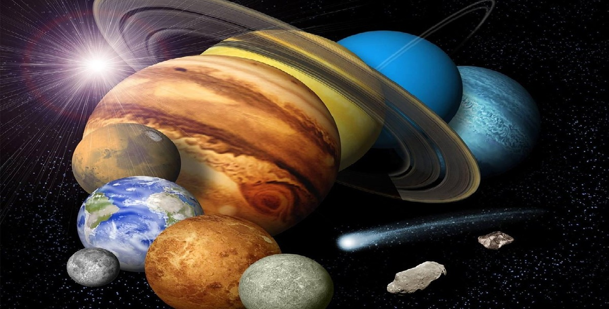

O Sistema Solar é formado pelo Sol e por todos os corpos celestes que giram ao seu redor, presos pela sua gravidade: oito planetas, planetas anões, centenas de luas, milhões de asteroides e bilhões de cometas. Ele surgiu há cerca de 4,6 bilhões de anos a partir de uma enorme nuvem de gás e poeira e fica no Braço de Órion da Via Láctea, a nossa galáxia. Toque em um corpo celeste abaixo para conhecê-lo melhor